SGLang与Miles团队联合Thinking Machines，为前沿多模态模型Inkling提供了Day-0支持：针对其全新架构做了专门优化，并具备广泛的功能覆盖；同时与Modal合作训练了Inkling的DFlash草稿模型。
Inkling是一个9750亿参数（975B）的多模态模型，上下文窗口最长可达100万token，在标准decoder-only Transformer基础上集成了短卷积、注意力相对位置嵌入，以及MoE中的共享专家池。在Nvidia Blackwell GPU上，SGLang实现了最高71.7k tok/s的输入吞吐，以及171.0 tok/s的每用户解码速度。
Inkling在标准decoder-only Transformer架构基础上，集成了三个组件：短卷积、带相对位置嵌入的注意力，以及MoE中的共享专家池。
上图展示了Inkling在注意力和MoE上的设计，两者都以同样的新方式收尾：在残差连接之前加一个短卷积（ShortConv）。注意力还会在Q/K归一化之前对K和V做短卷积，并把一个可学习的、由query条件化的相对位置偏置（RelLogitsProj）直接加进注意力logits，取代位置嵌入。MoE运行top-k路由，并带有共享专家池（Sink）。与传统共享专家MoE不同：后者在顶部叠加一条永远开启、独立于路由器的共享通路：Inkling的路由器连共享专家也一起打分，并把它们的权重与选中的路由专家权重一起归一化，因此两者共用同一个权重预算。
短卷积是一种在token维度上、按通道的因果卷积。对于位置t、通道c的隐藏状态，它读取当前token以及同一通道前W−1个位置。当前Inkling配置使用W=4。ShortConv在每个decoder层中出现四处：K流ShortConv（在K投影之后、Q/K归一化之前）、V流ShortConv（在V投影之后）、注意力输出ShortConv（作用于注意力输出）、MLP/MoE输出ShortConv（作用于MLP/MoE输出）。
在Inkling中，每个注意力层都把可学习的、按头的相对位置偏置直接加进softmax之前的logits。除qt,h、kt,h、vt,h之外，每个query token还携带一个相对特征rt,h，通过可学习的投影P映射到按因果距离分桶索引的相对logits向量。注意力logit在缩放点积上直接加上一个相对位置偏置，该偏置由query的相对logits按相对距离选取。其中 α 是注意力缩放因子；因果掩码照常处理未来位置，超出rel_extent的距离只贡献零偏置。
Inkling在同一栈中混合滑动窗口层和full-attention层：两种变体都用相对注意力，只是掩码不同。默认布局是每五个滑动窗口层后接一个full-attention层（layer_id mod 6 = 5），既给模型廉价的局部层，又周期性地提供full-context层来处理长程信息。full-attention层还额外支持对qt,h和相对logits施加与长度相关的log缩放因子，让模型随上下文增长调节logit幅度。
Inkling的前馈模块是标准的sigmoid-gated top-k MoE：路由器打分、top-k选择、对选中专家做归一化权重：唯独一处例外：它如何并入两个共享专家。多数共享专家MoE设计是在顶部叠加一条独立的稠密通路，即永远开启、从不与路由器竞争概率质量的专家。Inkling则把路由专家和共享专家一起打分：top-k选择仍只从路由专家池里挑，但一旦选定，被选中路由专家的得分就与共享专家得分拼接、作为单一组一起重新归一化。随后两组权重各自缩放其专家输出，并求和到同一结果中。
Inkling的三处架构改动，每一处都打破了标准decoder-only推理服务所依赖的假设。要让Inkling于SGLang跑得快，就得为每一处都上新算子和执行策略。
ShortConv本身很小：是一个W=4的按通道因果滤波器：但它在注意力内部（K、V）出现两次，在残差流周围（注意力输出、MLP输出）也出现两次，贯穿Inkling的每一个decoder层。
KV ShortConv + QK-norm + KV存储：K流和V流的ShortConv紧挨在Q/K归一化和KV-cache写入之前。SGLang把这三步：K/V卷积、Q/K RMSNorm、KV-cache写入：融合进一个attention-prologue内核。
All-reduce + ShortConv（+ 解码时的RMSNorm与残差）：注意力输出和MLP输出的ShortConv位于残差流上，正是张量并行all-reduce已经运行的位置。SGLang构建了一系列定制all-reduce内核来削减这部分开销，比torch的multimem_all_reduce_ 最高快2.1×。由于ShortConv紧接在all-reduce之后，SGLang把它直接融进all-reduce内核。对解码而言，RMSNorm和残差加法也折叠进同一个内核。这个融合内核比未融合链快2.08–3.60×，在输入长度扫描中带来端到端吞吐 +5–8% 的提升。
Prefill全CUDA图：Breakable CUDA graph（BCG）和piecewise CUDA graph（PCG）是削减prefill期间CPU启动开销的标准做法，但凡是算子需要实时按请求元数据的地方都须回退到eager执行，而Inkling每层四处ShortConv站点正是这种情况。每个站点的eager回退都是一次真实的、多层级Python调用栈。在约66层、每层这么多eager工作的情况下，BCG和PCG仍会留下真实的CUDA气泡：即CPU处理未捕获段时GPU的空闲时间。
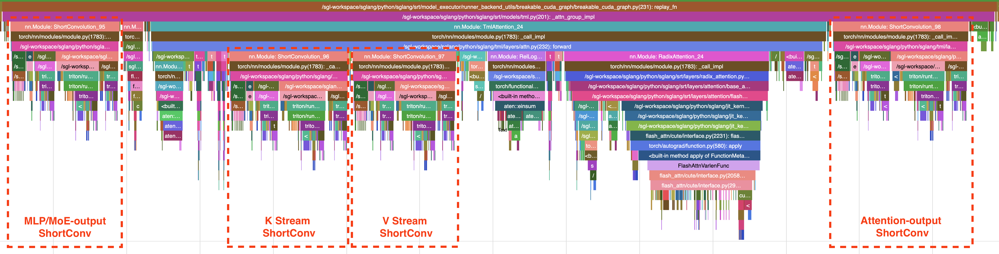
全CUDA图捕获把那些气泡消除掉：它把整个前向（含ShortConv）捕获进一个图，大小限定为有限个数的请求槽（full_prefill_max_req），重放只刷新缓冲区内容而不再重新派发Python。全图prefill吞吐在大型形状下与BCG大致持平，在受启动限制的形状下领先BCG +14–17%。
分片ShortConv：注意力输出和MLP输出的ShortConv位于残差流上，所以不分片的话每个张量并行rank都会以全宽度冗余地计算和缓存它们。SGLang转而提供分片策略：对部分和做reduce-scatter，让每个rank只持有自己的隐维度分片，针对相应的分片缓存本地运行ShortConv，再通过all-gather汇总回全宽度。这释放了GPU显存，但reduce-scatter/all-gather往返是在普通all-reduce之上的额外通信，在解码的小步长下开销大于收益：因此它是一个可选策略，而非默认。
剪裁偏置（Sheared-bias）内核：相对偏置项必须加在注意力内核内部。Inkling的FlashAttention-4集成支持两种等价做法：score-mod路径（每个注意力tile在score回调里计算i−j并即时查表rel_logits）和sheared-bias路径（相对logits预先被剪裁进一个按列对齐的偏置张量），这样内核就能用普通的tile加载来加偏置，而不用逐个score做索引。剪裁布局更快，但需要Inkling专用的FA4分支，且tile对齐和padding约定要匹配：这也是Inkling默认采用的路径。
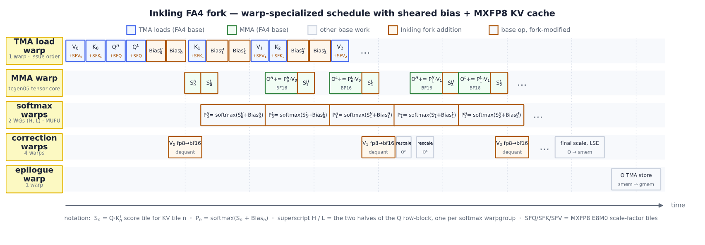
双流重叠：rel_logits投影只依赖融合的QKVR投影输出，而不依赖attention-prologue内核对K和V所做的ShortConv/QK-norm工作。SGLang把它放在与那个prologue不同的CUDA流上运行，从而与卷积/归一化重叠，而不是串行地排在它后面。
MXFP8支持：用MXFP8而非bf16存储K/V，KV-cache容量大约翻倍，而Blackwell原生运行MXFP8矩阵乘的吞吐也高于bf16。FA4分支非对称地应用这一点：Q与Kᵀ 作为原生MXFP8 MMA运行，而P与V保留在bf16以保护精度，把MXFP8量化直接融进同一个attention-prologue内核，把开销压到约4.7–4.8 µs：在bf16基线的约14% 以内：同时拿到KV-cache的显存收益。
Top-k：共享池MoE门控是sigmoid + 偏置top-k选择，随后对选中的路由得分和共享得分做联合logsigmoid重归一化。一个融合的Triton内核把整串收拢，在真实token数下比未融合链快1.6–5.6×；一个针对形状特化的CUDA-JIT版本更进一步，例如在T=4096时7.72 µs对未融合链的26.15 µs（3.4×），在T=16384时20.09 µs对52.88 µs（2.6×）。
共享专家融合：共享池的数学意味着共享专家作为一个完整的张量并行稠密块运行。我们转而把专家轴融合进矩阵维度：gate/up权重沿输出维度堆叠，down权重沿输入维度拼接，得到的二维权重表示称为线性化布局（linearized layout）。它的down GEMM在自己的归约中就完成了专家求和，从而消除了被复制的输入、逐专家的临时结果以及单独的一次求和。于B200 W4A16服务下，专家融合把输入吞吐提升5.8–11.1%，并把TTFT降低5.5–10.0%（BS1–32）；H200输入吞吐提升2.2–4.5%，解码吞吐则保持稳定。
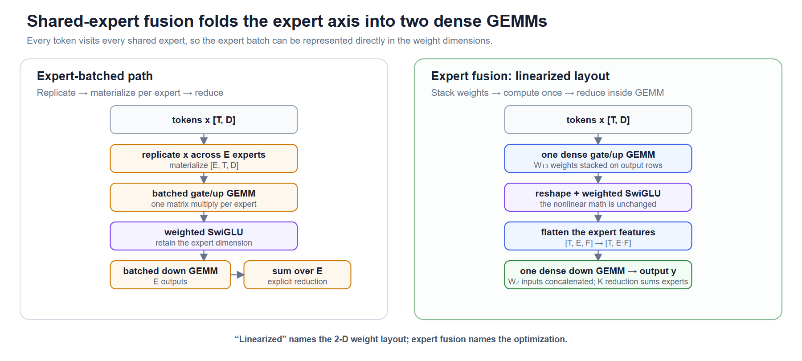
Inkling于SGLang获得了广泛的功能覆盖，下面逐一展开关键能力。
Inkling自带八层串联的MTP（multi-token-prediction）层用于投机解码：不是把一个草稿头重放八次，而是八层各自拥有自己的权重，每层对应一个草稿深度，每层消费上一层的输出。它们共同构成一种EAGLE式的递归：一次目标前向产生一个隐藏状态，该链把它向深处扩展八个token，目标在单次前向中验证全部九个位置。
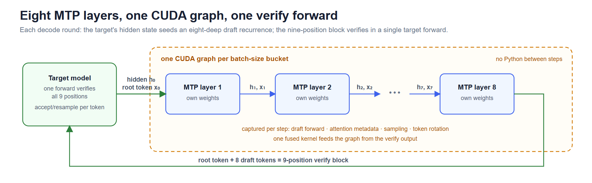
整条链一张CUDA图：基线设计每步草稿重放一张图，步骤之间用Python采样、旋转、重建元数据；SGLang转而针对每个批大小把整条链捕获进一张CUDA图，中间没有Python。一个融合内核从验证输出喂入这张图，取代了主机过去在验证和草稿之间发出的约20次小拷贝。
分布精确拒绝采样：在温度 > 0时，Inkling服务支持真正的投机拒绝采样（--speculative-use-rejection-sampling），以概率min(1, p_k/q_k) 接受草稿token，被拒时从残差分布重新采样，从而精确保留目标分布。验证步需要每一步完整的草稿分布q_k，被图录制的链一边走一边把每步概率存进一个持久的 [bs, 8, vocab] 缓冲区。
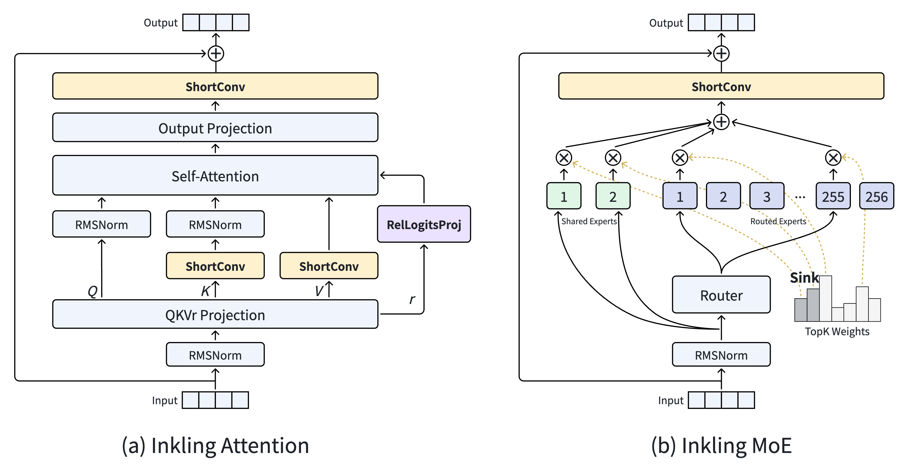
无同步的解码轮：以上所有环节被缝合起来，使解码循环完全重叠地运行，SGLang在整个一轮中完全不发出设备同步，主机始终跑在GPU前面。
SGLang还支持基于DFlash的投机解码：一种独立的草稿架构，而非串联在目标之上的层。一个DFlash草稿作为自己的模型、带着自己的KV cache运行，在一次前向中填充满一个被掩码的未来位置块。我们与Modal团队合作训练了Inkling的DFlash草稿模型，给Inkling服务提供了第二条投机解码路径（--speculative-algorithm DFLASH）。
Inkling有三种异构状态类型：full-attention KV、滑动窗口KV，以及ShortConv卷积状态，三者都需要从prefill节点传到decode节点。这个三组件池原本就是为混合SSM-注意力模型而建，Inkling的卷积状态正好契合同一套基础设施，所以分离路径上不需要新的传输逻辑。SGLang的UnifiedRadixCache是所有状态类型的统一抽象。
SGLang通过给Triton注意力后端新增的一个通用score_mod接口，于AMD MI35X上支持Inkling。该接口在编译期把一个调用方提供的score修改函数内联进extend和decode内核，因此Inkling的相对位置嵌入能于ROCm上工作，而不需要NVIDIA专用的FlashAttention-4路径。再结合额外的算子适配和aiter MoE runner集成，Inkling于MI35X以 --attention-backend triton --moe-runner-backend aiter端到端运行。
对于一个投影y = Wx，LoRA让基础权重W保持不变，并加上一个低秩更新：A把token从模型维度缩到秩r，B再把它扩回。Inkling把这些更新应用到注意力、稠密MLP、专家和输出投影上。SGLang转而使用双流调度：主CUDA流运行基础模型，而一条LoRA侧流计算每个token所选适配器的秩r工作，两条流只在需要delta的地方同步。专家层复用基础模型的路由元数据，而不是对LoRA更新再做一次路由。
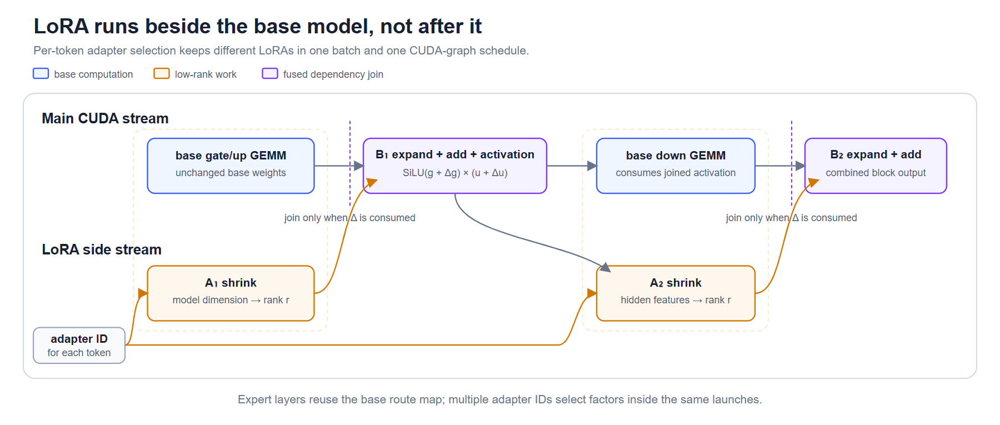
即便一个批里包含多个不同LoRA，结果也始终接近无LoRA基线。在BS4下从一个不同LoRA切到四个，于B200上仅损失0.9%。
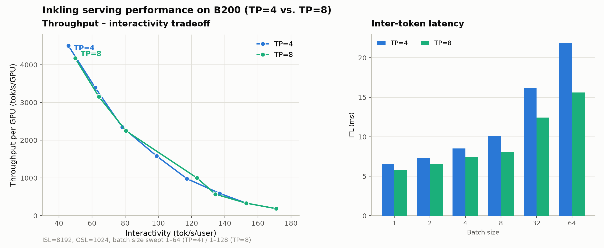
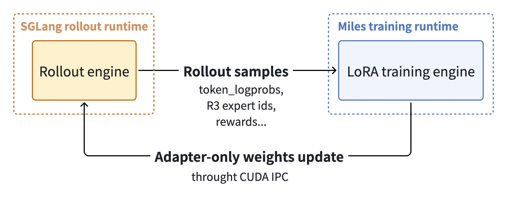
在共享前缀的请求之间复用KV cache，是LLM服务中最高效的优化之一。SGLang的radix cache通过把共享前缀组织成radix树来捕获它，HiCache则把这棵树按内存分层（L1 GPU HBM、L2主机DRAM、L3磁盘或远程存储）。Inkling让两者都变复杂了，因为它并不呈现前缀缓存所假设的那种单一同质注意力KV池：大多数层用滑动窗口注意力（SWA），而ShortConv分支保留一个小的按请求卷积状态。
SGLang为每条轴准备了独立的radix cache（RadixCache、SWARadixCache、MambaRadixCache），UnifiedRadixCache（#20415）把它们协调到一棵树上，覆盖类型化组件（FULL、SWA、MAMBA）。Inkling直接接入这条路径，注册一个三组件池，统一缓存选择一种组合的SWA + Mamba栈策略，在单一缓存控制器背后为全部三个组件构建出一个主机栈，从而继承了HiCache的分层复用。
SGLang把图像预处理中计算密集的部分（分块化、归一化、内容哈希）卸载到一个原生Rust扩展，该扩展在服务进程内无GIL运行。这支持多图并行，并把哈希计算移出调度热路径，使图像密集负载的TTFT降低14–44%、服务吞吐提升约20%。
我们于B200节点上对Inkling做端到端基准测试，在固定序列形状（输入长度8192、输出长度1024）下扫描批大小，全程开启TP=4与TP=8、对称内存和CUDA图。
左图描绘了两种张量并行规模下的吞吐-交互性帕累托前沿：在TP=8、批大小1时达到171.0 tok/s/用户；批大小32时达到71.7k tok/s的聚合输入吞吐。右图显示两种张量并行规模下，token间延迟（ITL）在批大小8之前都停留在个位数毫秒，直到批大小进入30多才升到十毫秒量级。值得注意：这些数字来自固定序列形状（ISL=8192/OSL=1024）下的扫描，实际业务中长上下文比例更高时，ShortConv的状态传输与滑动窗口KV的管理会成为新的瓶颈点，也是Inkling把卷积状态复用SSM基础设施的用意所在。
Miles通过覆盖全参数和LoRA优化、横跨DP/PP/TP/SP/EP/CP的Megatron后端，为Inkling提供Day-0 RL支持。为保持训练-推理一致性，该后端把定制的相对注意力、ShortConv和FP32 MoE算子与rollout路由重放结合在一起。完整的Inkling RL实现见Miles pull request #1683，可直接通过docker pull radixark/miles:inkling获取镜像。
Miles把Inkling实现为一个原生Megatron模型，重建了它的局部与全局相对注意力、四条残差短卷积路径、稠密到MoE的层调度、共享池路由器和专家，以及图像和音频编码器，全部作为可微的Megatron模块。它支持全部六种并行维度：DP（在副本间分发微批并同步梯度）、PP（跨流水线阶段切分层）、TP（切分融合的q/k/v/r和输出投影）、SP（切分残差ShortConv路径同时保留因果上下文）、EP（切分路由专家及其可训练状态）、CP（连续all-gather，q和r局部、k和v全局偏移gather）。
一个Inkling模型桥接器双向处理checkpoint转换：把发布的Hugging Face权重切分用于Megatron训练，再重建checkpoint导出和rollout权重更新所需的布局。同一个后端驱动全参数和LoRA RL。
基于原生Inkling后端和并行栈，Miles通过更新每一个模型张量来运行全参数GRPO。在每次迭代中，SGLang rollout worker生成轨迹并记录R3所需的路由专家ID；Miles的训练rank消费这些轨迹，重放路由决策，并施加全模型更新；随后模型桥接器把更新后的分布式分片转换成SGLang的张量布局，并以有界桶流式把下一版策略送回。
在单个GB300机架有限的GPU显存内，完整策略、梯度和FP32优化器状态会带来额外显存压力，因此Miles在受限的GPU工作集与节点本地NVMe之间流式传输Megatron DistributedOptimizer状态：这种GPU-磁盘卸载改变的是存储位置，而非优化器更新。
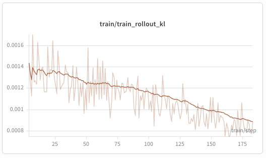
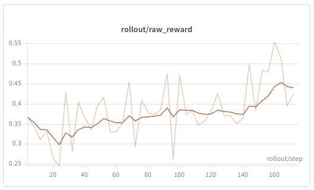
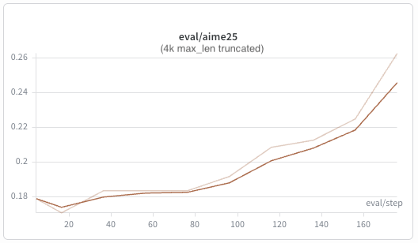
我们在12个节点、每节点4张GB300 GPU上运行Inkling 975B全参数GRPO。训练用DP2/PP3/TP4/EP8，rollout用TP8/EP16，全局批大小32、GRPO组大小8、最大回复长度4K。它开启路由重放，用Adam、学习率10⁻⁶，在DAPO-Math-17K上训练、AIME25上评估。训练-rollout KL保持在约10⁻³，而原始奖励和AIME25评估都稳步提升。
训练-推理一致性是RL中一项核心的正确性要求：训练器必须评估生成rollout的那个相同策略，即使训练和推理服务走的是不同的分布式执行栈。Miles从定义Inkling前向传播的算子层面解决这种错配，同时提供分布式训练所需的反向实现。
相对注意力：Miles采用与SGLang相同的固定相对投影P和注意力logit定义，提供FlexAttention、FA4和Transformer Engine三种训练侧注意力后端（默认FlexAttention）。于GB300上、8K打包序列、相对范围1024时，FlexAttention比Transformer Engine参考实现约快5×、峰值显存约少5×，同时在BF16数值噪声范围内匹配。
短卷积：Miles用定制的Triton前向和反向内核实现这个算子，把深度因果卷积与残差路径融合，以FP32累加、最后加残差，复现SGLang的算术顺序。
FP32 MoE激活与组合：Inkling的共享池MoE对门控激活和加权专家归约中的舍入都很敏感。Miles用FP32执行这两个阶段，使连续的专家计算在训练和rollout间对齐，补足了R3提供的离散路由对齐。
除了定制精度对齐算子，Rollout路由重放（R3）对MoE RL的训练-推理一致性同样重要：一个靠近top-k边界的小数值扰动，可能改变被选中的专家，从而改变计算图本身。SGLang在rollout期间记录路由的top-k专家ID，Miles在训练前向中复用这些ID，只重放专家ID而由当前路由器重算连续权重，所以梯度仍流经路由和共享权重。第二个Inkling特有的适配是多模态索引：SGLang在图像块和音频特征把prompt扩展之后才记录路由，所以Miles用引擎报告的扩展后长度而非原始文本token数。
Inkling发布的LoRA schema覆盖注意力、稠密MLP、MoE和LM-head投影。Miles在Megatron中原生实现同样的结构，包括TP/EP感知的执行和直接向SGLang的导出，因此RL只更新适配器，基础模型保持冻结。Inkling的路由专家使用共享外层分解：对w1和w3，A在专家间共享而专家特定的B遵循EP分片；对w2，专家特定的A被分片而B共享。
图9展示了一个完整的LoRA RL迭代：SGLang返回采样的token、rollout对数概率、奖励和掩码，以及R3所需的路由专家ID；Miles评估同一token序列，在每个路由器注入被记录的专家ID，并且只对方适配器求导。优化器步之后，Miles直接从分布式训练状态物化出一个可服务的适配器，把请求的TP和EP分片打包、对每个并行组做一次扁平的all-gather，再重建Inkling的SGLang布局。
下方路径在不经过主机内存暂存适配器载荷的情况下完成版本切换：Miles暂停生成、刷掉引擎缓存、把命名的GPU张量序列化为CUDA IPC句柄，发给同置的SGLang worker。使用与全参数运行相同的实验设置，LoRA GRPO把训练-rollout KL保持在10⁻³ 量级，原始奖励在约450步内稳步提升。仅同步适配器把权重更新延迟从49.4秒降到2.5秒（20× 加速），并把训练步时间降到全参数训练的85%。
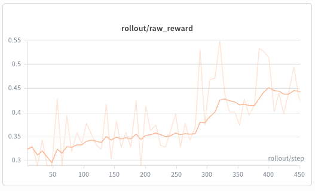
Inkling原生支持文本、图像和音频输入。Miles把这些模态的RL后端都扩展到了：全参数和LoRA配方都接受结构化的多模态rollout，在Megatron中执行Inkling的视觉和音频塔，并在媒体扩展后的序列上保留路由重放。
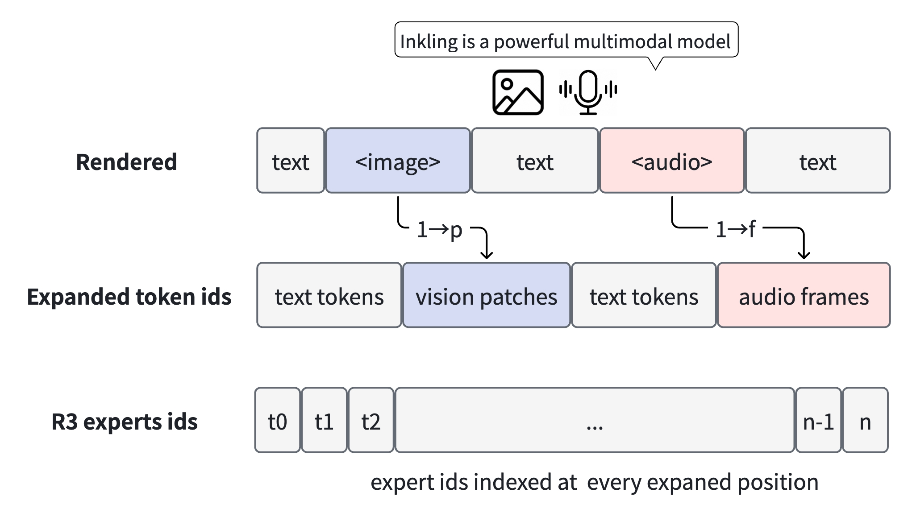
图11展示了核心的数据变换：Miles保留原始的结构化消息列表，直到Inkling专用渲染器为每个图像或音频项发出恰好一个哨兵（sentinel），再在训练前把哨兵替换成对应数量的词表内占位位置，同时记录必须插入媒体嵌入的样本局部位置。SGLang在这次扩展之后才做MoE路由决策，所以R3 trace包含每个扩展位置的专家ID。
在多模态LoRA RL中，当前生产配方冻结视觉和音频塔，在它们的嵌入周围训练语言模型适配器或基础模型。为验证该配方，我们于Geo3K上选用视觉-文本设置，Geo3K评估从约0.54升到0.58，训练-rollout KL在整个训练中都保持在10⁻³ 量级。同一条多模态路径也支持音频输入、全参数训练和分布式执行。
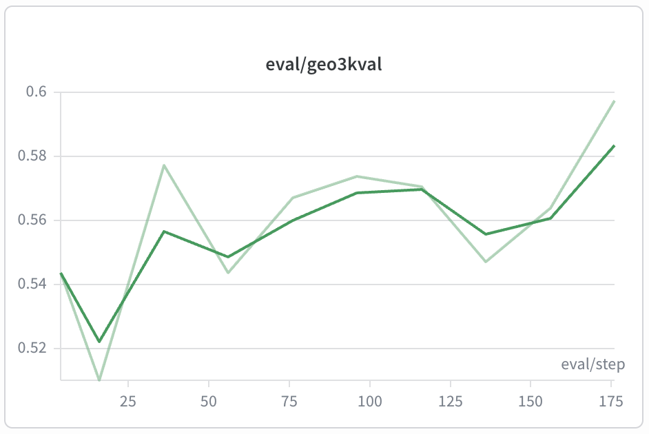
Inkling的Day-0落地，本质上是把一套「为推理服务而重新设计」的架构（短卷积、查询条件化相对注意力、共享专家池）在SGLang的Kernel/执行层与Miles的RL后端上同时打通：三个组件的每一处都对应一组定制算子，而非现成路径的简单套用。
对用户而言，最值得记住的是两条线：服务侧，8层MTP整链单图 + DFlash双路径把Blackwell上的解码吞吐推到71.7k tok/s；训练侧，Miles用定制精度对齐算子加Rollout路由重放（R3）锁死训练-推理一致性，让975B全参数GRPO与LoRA RL都能Day-0跑起来。这正是前沿模型「发布即可用」背后的工程厚度。如果你正评估是否把业务迁到Inkling，优先看两个信号：一是你的prefill形状是否落在全CUDA图收益区（大batch、长上下文时 +14–17% 最明显），二是是否需要LoRA热更新：仅同步适配器把权重切换从49.4秒压到2.5秒，意味着在线实验迭代可以做到分钟级而非小时级。
参考：https://www.lmsys.org/blog/2026-07-15-inkling-day0-support/